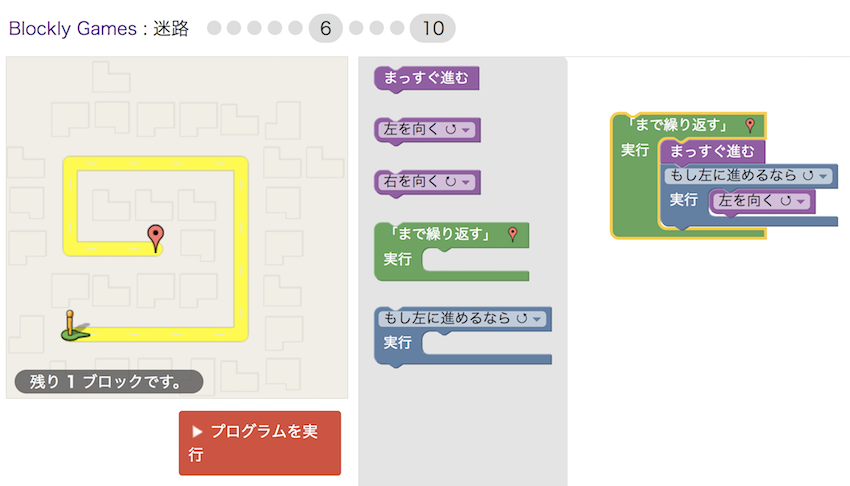
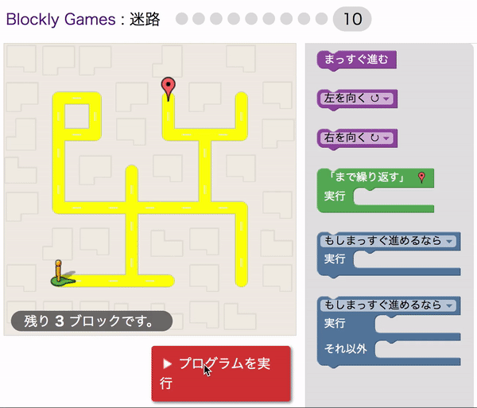

コーダー道場宇津木台
ペンギン プログラミング クラブ
パソコンに興味がある
ゲームで遊ぶのは好きだけど、ゲームを作ってみたい
音楽やアニメをパソコンで作ってみたい
ゲームで遊ぶのは好きだけど、ゲームを作ってみたい
音楽やアニメをパソコンで作ってみたい
日程： 2018/5/12 (土) 14:00-16:00
課題： ブロックリーゲームで遊びながら、プログラミングの基礎を学ぶ。
2018年度初のプログラミングクラブで、新しいメンバーが沢山来てくれて、盛り上がりました。 今回は、パソコンをWiFiに繋いで、ブロックリーゲーム（blockly games）を皆で挑戦しました。
パズルはすぐに終わらせて、迷路でプログラミングの基礎を学びました。 目的は、小僧を出発点から、目的地まで導くことでした。 使えるブロックが決まっていて、迷路が段々難しくなっていきます。 レベルが上がっていくと、並べられるブロックの数も制限され、更に悩まされます。

レベル１０は最高に難しかったが、何人かは解くことができました。 まだなら、あるいは復習するなら、オンラインでもできますので、再度挑戦してみましょう！
https://blockly-games.appspot.com
ちなみに私は、以下のように解きました。 ブロックは隠していますが、動きを見て、分かるかな？

※ ブロックリーはGoogleが無料で提供しているオープンソースソフトウェアです。 素晴らしいコンテンツを世の中に届けてもらって、感謝です！